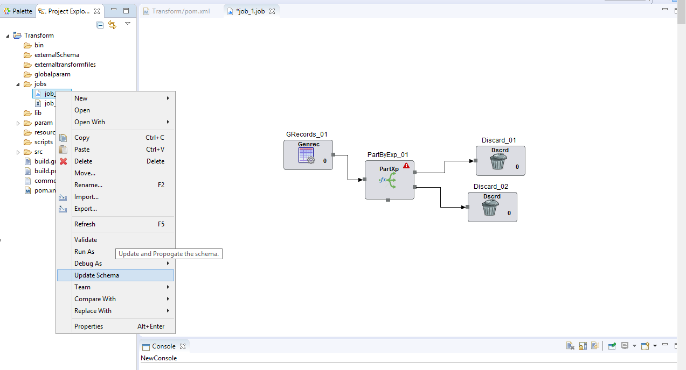

Update Schema
Update Schema functionality provides facility to load Schema from external files in the components of the job without opening individual component.
To update Schema:
Right click on job to see the Update Schema Option.

The update Schema option loads the schema of all components of a job from an external file (if any) given for that component.
This functionality is useful when external schema files are used in job and later modified , and the changes need to be reflected through out the job.
Schema file is read and populated in schema tab , also the schema is propagated to other components.